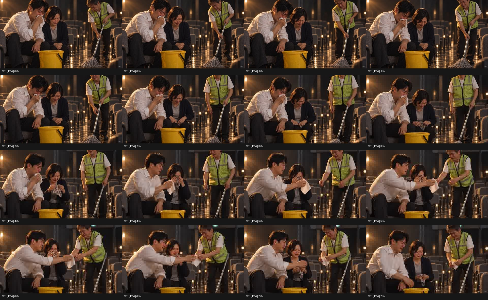
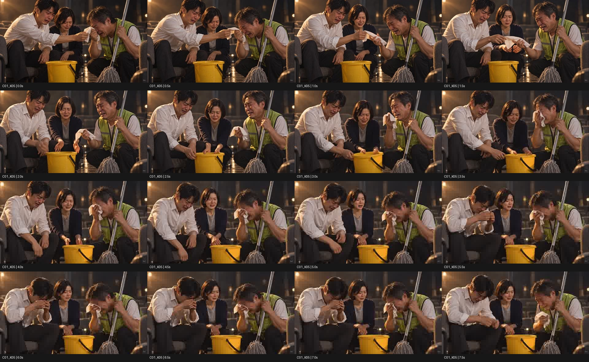

2026-10-16 · K04 Lite 10 + K05 Fast 20 · 잔액 30 → 0
8초 · 720p · 24fps. 재인코딩하지 않은 원본입니다. 오디오 트랙은 있으나 실제 음성·립싱크는 검증하지 않았습니다. C01 누적 원본 5/7컷이며 완성 편집본은 아직 없습니다.
6초 전체 사용 보류. 청소부 얼굴 잘림, B 손수건 조기 등장, 다음 컷의 전달 행동 선행. 초반 약 3초는 연결 실험용 부분 후보입니다.
원본 MP4 다운로드
7초 시각 후보. A가 H1을 놓고 C가 유지하며, B는 맨손으로 양동이를 옮깁니다. 실제 대사·립싱크 검토가 남았습니다.
원본 MP4 다운로드